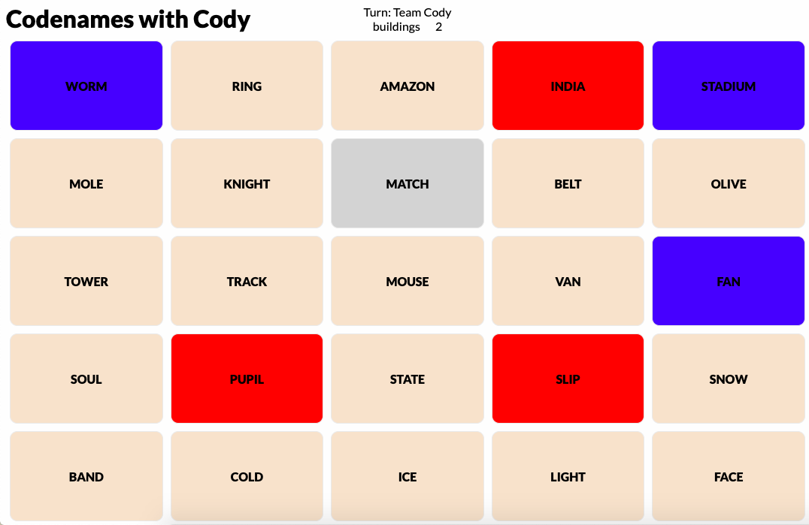
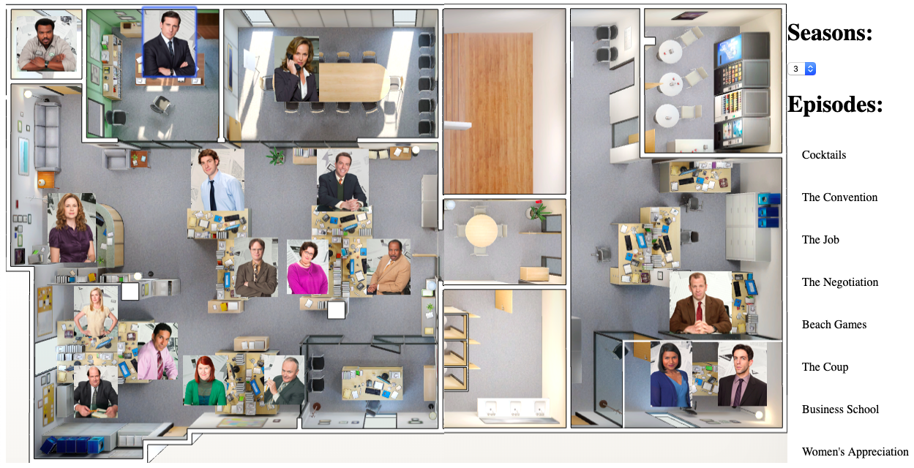
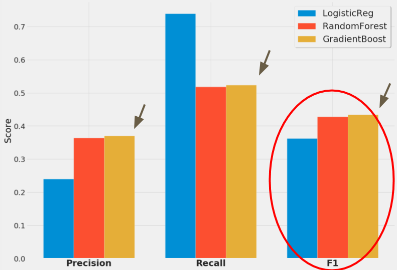
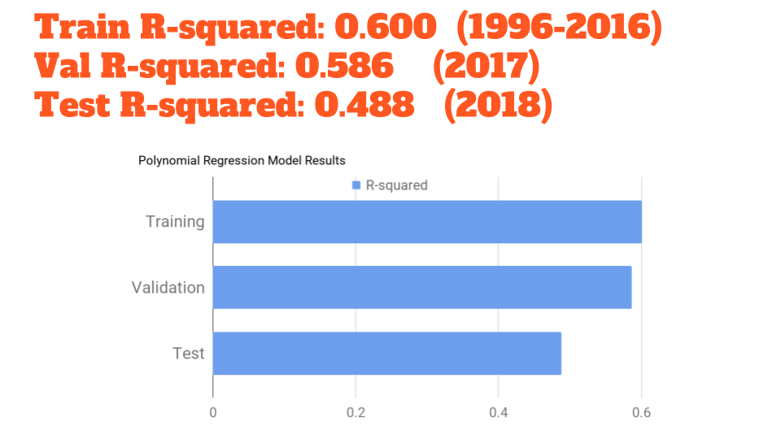

About Me

Graduating from New York University with a B.A. in Economics and a minor in Business Studies, I have worked in a variety of fields, including a stock brokerage firm, an animations marketing company, and a non-profit organization. In my most recent position, I leveraged my penchant for math as a Senior Actuarial Analyst at The Hartford Financial Services Group. Wanting to further develop my technical skills in the programming field, I pursued Data Science for its perfect combination of math and coding.
I am an experienced coder in Python and SQL and I'm eager to be challenged by the next dataset I can play with!
Projects
The Perfect Partner: Codenames AI Bot

Cody is a neural net trained bot that can play a popular boardgame called "Codenames" with human partners trained on their Facebook Messenger data. Cody has dual functionality so he can play as the codegiver as well as the guesser. The game is fully programmed in python from start to finish so Cody can effectively play anytime as your perfect partner.
GitHub
"The Office" Character Relationship Episode Recommender

Select two of your favorite characters and this Flask web app can recommend episodes where these two characters are relating to the most. This was achieved by using Natural Language Processing (TF-IDF and NMF topic modeling) on characters lines from the most popular show on Netflix... The Office!
GitHub
E-commerce Product Repurchasing Classifier

Using data from a major online grocery retail player, we can use machine learning with random decision forests and XGBoost algorithm to predict whether or not a customer will repurchase a given product. The dataset was provided through Kaggle as part of a competition hosted by Instacart.
GitHub
Are You a Star? (NBA All-Star Vote Predictor)

Every year, NBA players feel snubbed out of being an All-Star when they don't get enough votes albeit having a great statistical year. Wonder exactly what it takes to be voted into the NBA All-Star Game? Say no more! We can use linear regression to determine how a player season stats can be used to predict their All-Star vote counts. Now as a player, you can know what stats you need to boost and by how much to better your chances of being voted into the All-Star Game!
GitHub